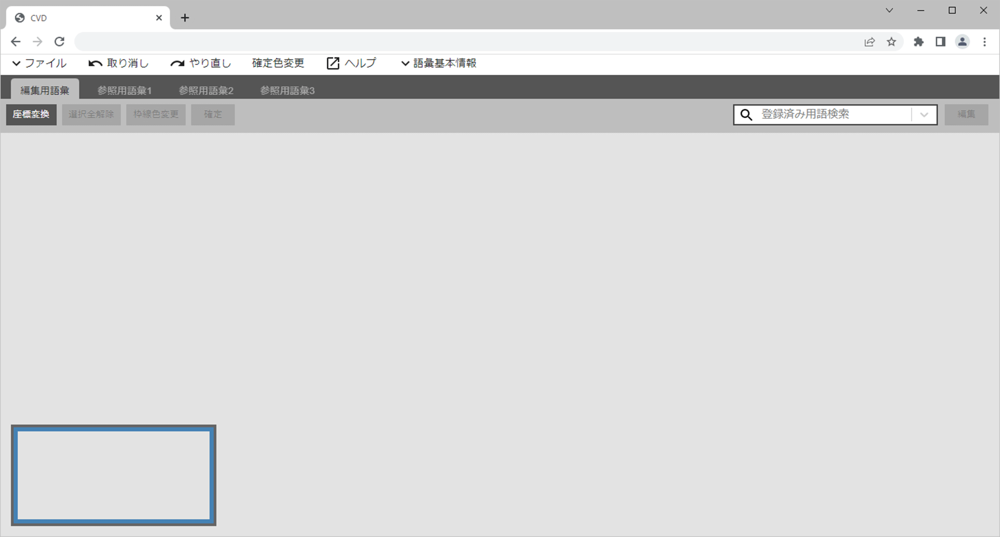
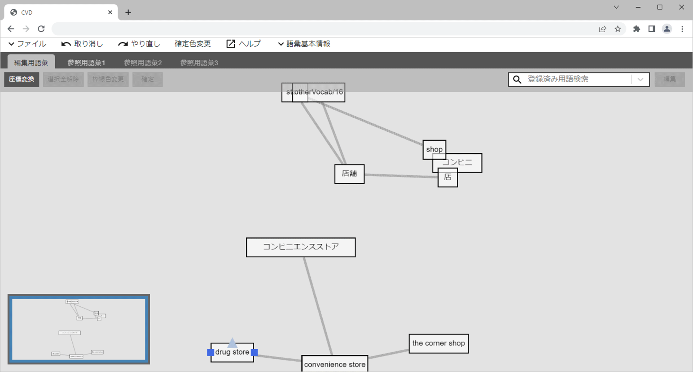
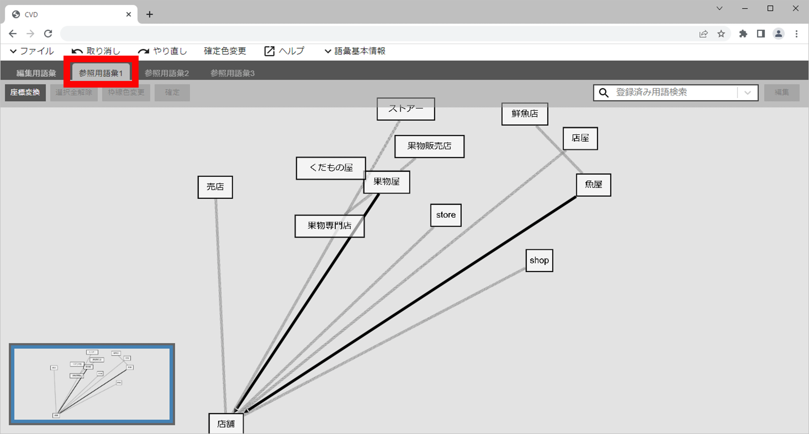
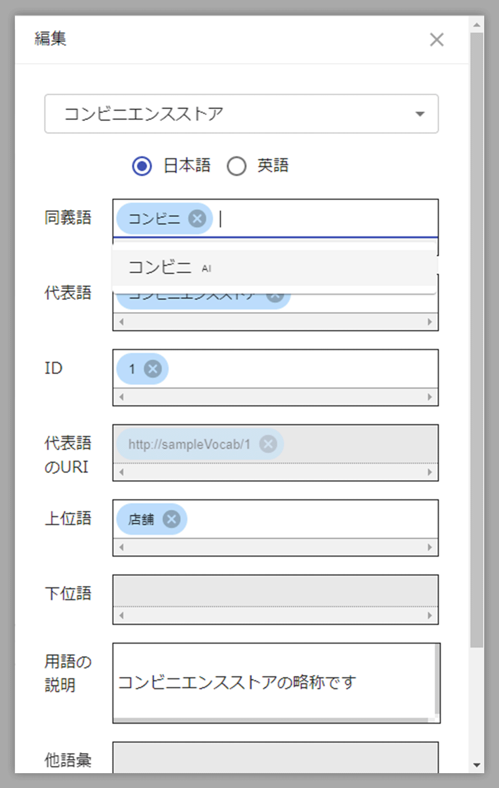
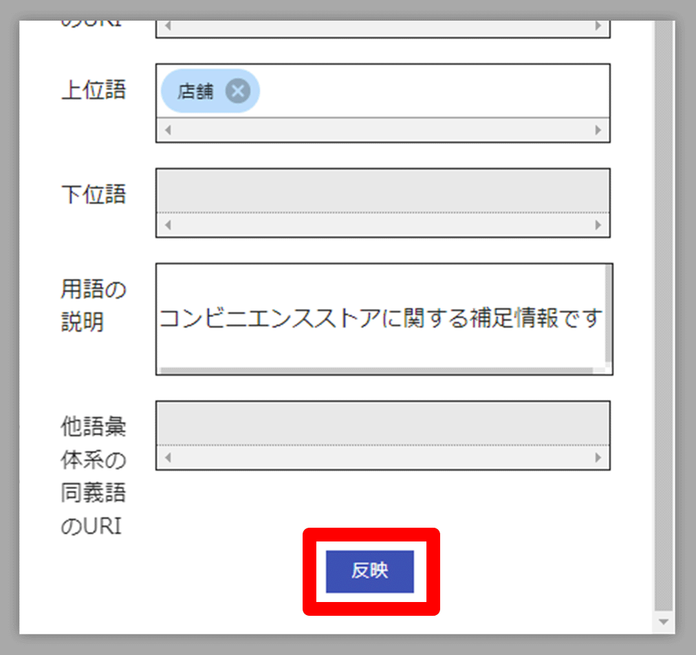

このページではCVDの基本的な使い方について解説しています
Linuxマシンに以下のバージョンのdockerおよびdocker-composeがインストールされていることが前提となります。
dockerおよびdocker-composeがインストールされていない場合は、Dockerの公式ページなどを参照の上、インストールしてください。
Linuxマシン上でCVDを起動する方法
CVDのリポジトリをローカルのLinuxマシンにクローンします。Linuxマシンのターミナル上で以下のコマンドを実行してください。
$ git clone https://github.com/fujitsu/controlled-vocabulary-designer.gitクローンしたCVDのリポジトリのフォルダに移動し、Linuxマシンのターミナル上で以下のコマンドを実行します。（※1）
$ docker-compose up -d
（※1）proxy環境下で使用されるときは、HTTP_PROXY, HTTPS_PROXYを事前に環境変数に設定してください。
Linuxマシンのターミナル上で以下のように表示されれば起動成功です。
起動したCVDにWEBブラウザからアクセスする方法
作業環境のWEBブラウザ（※2）で以下にアクセスします。
http://(hostname):10081/あるいは
http://(LinuxマシンのIPアドレス):10081/(※2) サポートしているブラウザは以下の通りです。
以下の図のような画面が表示されればWEBブラウザからのアクセスは成功です。

WEBブラウザ上での操作方法について
以降では、クローンしたCVDのリポジトリのsample-fileフォルダにある以下のファイルを使用して、WEBブラウザでの操作方法を説明します。
CVDにファイルを読み込む方法
CVD画面左上の「ファイル」→「開く」をクリックすると、ファイルの読み込みダイアログが表示されます。「編集用語彙」の参照ボタンをクリックし、hensyugoi.csvを選択します。
「編集用語彙_meta」の参照ボタンをクリックし、hensyugoi_meta.csvを選択します。
「参照用語彙1」の参照ボタンをクリックし、sansyougoi.csvを選択します。その後、下の「OK」をクリックします。

ダイアログが消えて、以下のように用語が表示されれば、ファイルの読み込みが完了です。（画面上に表示されているのは、hensyugoi.csvの内容になります。）

hensyugoi_meta.csvの内容は、画面上部「語彙基本情報」をクリックすると確認、編集することができます。
sansyougoi.csvの内容は、画面上部「参照用語彙1」をクリックすることで確認できます。（sansyougoi.csvの内容は表示のみで編集はできません）

CVDで用語を編集する方法
画面上部「編集用語彙」タブをクリックし、hensyugoi.csvの内容を表示します。一例として、画面上で”コンビニ”という用語を探します。画面上を目視で探すか、右上の検索ボックス上で検索することができます。検索ボックスをクリックすると、hensyugoi.csvに記載されている用語一覧が表示されます。
検索ボックス上で”コンビニ”を選択すると、”コンビニ”が画面中央に表示されます。

他の用語と重なり、少し見づらいため、”コンビニ”の表示位置を少しずらします。”コンビニ”をドラッグし、適当な場所に動かします。

”コンビニ”の外枠に色をつけて、場所を目立たせます。画面上部「枠線色変更」をクリックし、適当な色を選択します。ここでは、「レッド」を選択します。すると、”コンビニ”の外枠の色が赤色に変更されます。

”コンビニ”の同義関係、上下関係を編集する方法について
”コンビニ”の上にマウスポインタを合わせると、ポイントが3つ表示されます。このポイントから用語の関係性を引き出すことができます。
”コンビニ”の同義語として”コンビニエンスストア”を設定してみましょう。
”コンビニ”にポインタを合わせて表示された3つのポイントのうち、左右のポイントのいづれかの上でマウスボタンを押し下げたままドラッグすると、同義関係線を引き出すことができます。

同義関係線をドラッグして引っ張りながら”コンビニエンスストア”の上でマウスボタンをはなすと、次のようなダイアログが表示されます。

次のように、”コンビニ”と”コンビニエンスストア”がグレーの線で結ばれました。このグレーの線が同義関係線です。
”コンビニエンスストア”の上位語に”店舗”を設定してみましょう。
まず、”店舗”が”http://otherVocabulary/16”に重なって見えないためマウスドラッグで適当な位置に移動します。”コンビニエンスストア” の上にマウスポインタを合わせると、ポイントが3つ表示されます。このうち、上部のポイント上でマウスボタンを押し下げ、ドラッグすると上下関係線を引き出せます。

上下関係線をドラッグして”店舗”の上でマウスボタンをはなすと、次のダイアログが表示されますので、確認してOKをクリックします。

すると、次のように、”コンビニエンスストア”から”店舗”に向かう先端が矢印の黒い線で結ばれました。この線が上下関係線です。（矢印の先端がある方が上位語になります）
編集パネルを使用して、詳しい情報の表示と編集をする方法
”コンビニエンスストア”をクリックしたあと、画面右上の「編集」をクリックします。

”コンビニエンスストア”についての情報（以降、編集パネル）が表示されます。

同義語・代表語・上位語は、この編集パネルでも編集できます。同義語テキストボックスをクリックすると、AIによる同義語候補結果が表示されます。この中から同義語であると考えられる用語を選択するか、手入力することで同義語を設定できます。上位語についても同様です。

編集パネルでは、IDを編集することで代表語のURIを変更したり、用語の説明を編集することもできます。
ここでは、用語の説明を編集してみます。用語の説明テキストボックスに、”コンビニエンスストアに関する補足情報です”と入力ます。入力が終わったら一番下の「反映」ボタンをクリックすると、編集した内容が保存され編集パネルが閉じます。

用語の説明は同義語すべてに同じ値が入ります。
”コンビニエンスストア”を選択したままの状態から編集パネルを開き、編集パネル上部のプルダウンから”コンビニ”を選択して”コンビニ”に切り替えます。用語の説明テキストボックスを確認すると、先ほど入力した”コンビニエンスストアに関する補足情報です”が表示されています。

CVDで編集中のデータをファイルとして書き出す方法
書き出しできるファイルの種類は以下の3種類です。
いずれも同様の手順で書き出すことができます。（RDFの書き出しでは、ファイルフォーマットを選択できます。）
以下はCSV（用語一覧）を例にした書き出し方法です。
CVD画面左上の「ファイル」→「保存」→「CSV（用語一覧）」の順にクリックします。
下図のダイアログが表示され、任意のファイル名を入力して「OK」をクリックすると、ファイルが保存・ダウンロードされます。

 CVDのダウンロード
CVDのダウンロード